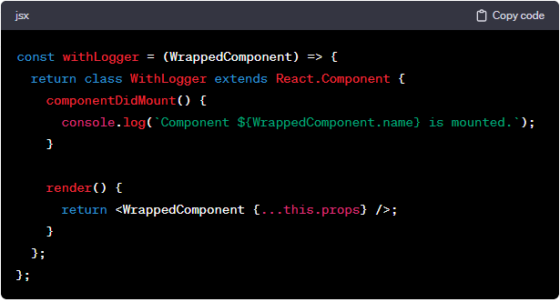
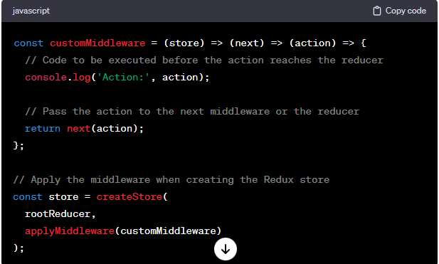
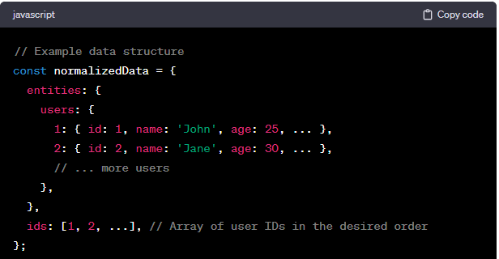
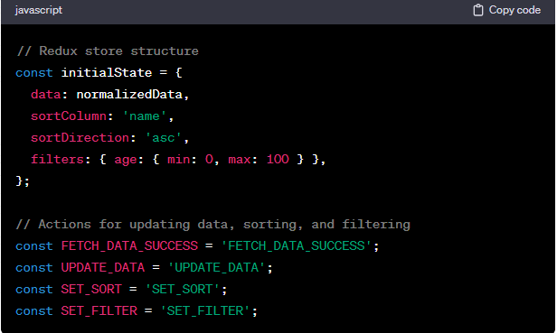
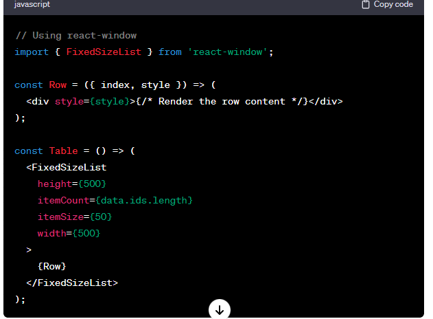
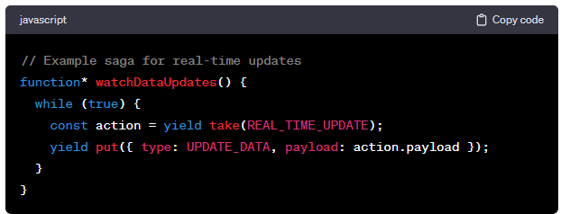
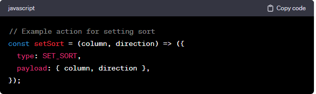
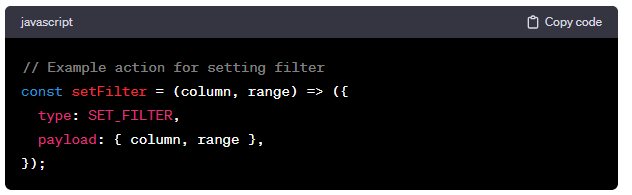

AI PALLETE INTERVIEW QUESTIONS
Can you explain the difference between the controlled and uncontrolled components in React, give a scenerio where an uncontrolled component might be preferable?
Certainly! In React, controlled and uncontrolled components refer to how you manage and interact with the component's state.
Controlled Components:
In a controlled component, React controls the state of the component. The component receives its current value and updates via props, and any changes are handled by callback functions passed as props. The parent component has full control over the component's behavior.
Uncontrolled Components:
In an uncontrolled component, the component manages its own state internally. React doesn't control or manage the component's state; instead, you rely on refs to interact with the component when needed.
Scenario for Uncontrolled Components:
Uncontrolled components might be preferable in scenarios where you want to integrate React with non-React code or libraries. For example:
1. Integration with Third-Party Libraries:
If you are using a third-party JavaScript library that manages its state internally or relies on direct DOM manipulation, using an uncontrolled component can be more convenient.
This allows you to seamlessly integrate React with the library without having to synchronize state between the React component and the external library.
In this scenario, using a controlled component would require manually syncing the state between the React component and the external library, which can be error-prone. Uncontrolled components, in this case, provide a simpler integration mechanism.
How does event loop work in conjusction with the call stack, calback queue
The event loop is a crucial part of Javascript's concurrency model, managing the execution of code in a non-blocking manner. It works on conjuction with the call stack, callback queue (also known as the task queue), and microtask queue to handle asynchronuos operations.
1- Call Stack :
The call stack is a data structure that keeps track of the exexution context of functions. When a function is called a new frame is added to the top of the stack. When a function completes, it's frame is removed.
The call stack is synchronous and processes one task at a time.
2-Callback Queue:The callback queue holds tasks that are ready to be executed.
These task atre typically generated as a result of asynchornous operations, such as HTTP request or timers.
3- Microtask Queue:
The microtask queue is a aueue for microtasks which are tasks with higher priority than regular tasks in callback queue.
The event loop follows a continuous cycle:
1-Check call stack
2- process Microtasks
3-
Check callback Queue
4-Process Callbacks
5-Repeat
This mechanism allows Javascript to handle synchronous operartions efficiently, providinf a smooth user experience in web applications without blocking the main thread.
Understanding this event loop model is crucial for writing effective asynchronous Javascriopt code.
Discuss the implications of immutability in JavaScript. How does Redux leverage immutability, and what are the common pitfalls developers might encounter when managing state
Immutability in Javascript refers is to the idea that once an object is create, it cannot be changed. Indtead of modifying the existing data, you create a new copy with the desired changes. Immutability brings several benifits and is levereged by libraries like Redux for state management in react applications.
Implications of Immutability:
1- Predictable State
2-Easy Undo/ Redo:
3-Reference Equality
4- Facilitates Pure Functions
Rredux and Immutability:
Redux, a predictable state container for Javascript applications, heavily relies on immutability. The state in a Redux store should not be mutated direcetly. Instead, when an action is dispatched, reducers create a new state object with the neccessary updates.
Redux uses a pattern known as "reducer composition", where smaller , focussed reducers handle specific parts of the state. These reducers return a new state objects, maintaing immutability.
Common Pitfalls:
1- Direct State Mutation
2- Performance Concerns
3- Deep Copy Overhead
4-Learning Curve
5-Tooling and Libraries
By embracing immutability and understaing how it's used in libraries like Redux developers cam create more mainitainable, predictable and scalable applications.
While there are challanges initially, the benifits in terms of code maintainability and reliability often outweigh the drawbacks.
Explain how JavaScripts prototype inheritance differs from classical inheritance. How does this affect the way we structure object-oriented code in JavaScript
Javacript uses prototype-based inheritance , which differs from classical inheritance found in languages like Java or C++.In classical inheritance , classes are used to create objects, and instances inherit properties and methods from classes. In contrast, Javascript uses prototypes directly, allowing to inherit properties and methods from other objects.
Prototype Inheritance in Javascript:
1- Prototypes
2-Object Linkage
3-Constructor Functions
Difference from Classical Inheritance:
1- No classes
2-Dynamic nature
3-Object Linkage
Implications for object oriented code in javascript
1-Object Composition
2-Porototypal Inheritance
3-Factory functions and Object.create
4-Mixins and object argumentation
Understanding the unique features of prototype- based inheritance in Javascript allows developers to leverage it's flexibility and build robust, mainitainable and scalable object-oriented code. While it may be different from classical Inheritance, it offers its own set of advantages when used effectively.
Can you explain the concept of a pure component in React and how it differs from a regular component? How does React.memo() contribute to performance optimizations in functional components?
A pure component in React is a specific type of component that provides performance optimizations by automatically implementing a shallow comparison of its props and state. This comparison helpos prevent unncessary renders when the component receives new props and state with the same values.
Characteristics of a Pure Component:
1-Shallow Prop and State Comparison
2- Inherits from PureComponent
3- Pure Components vs regular Components
React.memo() for functional components-
"React.memo()" is a higher order component that memoizes the result of a functional component, preventing unncessary renders when the component receives the same props.
It is similar in comcept to pure components for class components but is applicable to functional components.
Performance optimization with React.memo():
1-Memoization
2-Shallow Equality Check
Differences Betweeb Pure Components and React.memo():
1- Class component vs Functional Components- Pure components are class components while 'react.memo() is specfically desgined for functional components'
2- Usage and Syntax: Pure components are created by extending 'React.PureComponent', whereas 'React.memo()' is applied as a higer order component to functional components.
3- Lifecycle methods: Pure componets use the 'should ComponentUpdate' lifecycle method, while 'react.memo()' relies on memoization to achieve simial optimization for functional components.
In summary, both pure components and 'React,memo()' contribute to performance optimizations by preventing unnecessary re-renders when props or state have not changed.
Choosing between them depends on whether you are working with class components or functional components in your React application.
How does Reacts new Concurrent Mode change the way components are rendered, and what are the implications for state management with Redux?
React's Concurrent Mode is designed to improve the user experience by making applications more responsive and resilient to unpredictable updates. It allows React to work on multiple tasks concurrently, including rendering, so that the user interface remains smooth even when there are computationally intensive tasks.
In terms of rendering, Concurrent Mode introduces the concept of "time-slicing," which allows React to break down the rendering work into smaller chunks. This enables the browser to interrupt rendering to handle higher-priority tasks, making the application more responsive.
Regarding the implications for state management with Redux:
Asynchronous Operations: Concurrent Mode can be beneficial when dealing with asynchronous operations, such as data fetching. Components can suspend rendering while waiting for data, leading to a smoother user experience. This can potentially reduce the need for complex state management solutions for handling asynchronous actions in Redux.
Improved Responsiveness: The improved responsiveness introduced by Concurrent Mode may reduce the need for certain optimizations or workarounds used in Redux to handle UI responsiveness in the face of expensive rendering tasks.
Migration Considerations: If you're using Concurrent Mode in an existing application with Redux, you may need to consider how Redux fits into the new rendering model. Redux itself is agnostic to the rendering layer, so the general principles of Redux should still apply. However, you may need to adapt your components and state management practices to take advantage of the new features introduced by Concurrent Mode.
Regarding the implications for the state management with Redux, Concurrent Mode itself doesn't directly impact Redux. Redux remains a separate state management library. However, the improved rendering performance and responsiveness of Concurrent Mode can indirectly benefit applications using Redux by providing a smoother user experience.
It's essential to note that the integration of Concurrent Mode with state management libraries like Redux depends on how the application is structured and the specific requirements. Typically, you can continue using Redux with Concurrent Mode without major changes, but it's crucial to consider the specific needs and potential optimizations for your application.
Explain the concept of higher order components in React. How do they compare to render props and Hooks in terms of use cases and performance?
Higher Order Components (HOCs) are a pattern in React that allows you to reuse component logic. A Higher Order Component is a function that takes a component and returns a new component with some enhanced functionality. They are a way to compose components in a modular and reusable manner.
Here's a simple example of a HOC:

In this example, withLogger is a HOC that adds logging functionality to any component it wraps.
Comparing HOCs to render props and Hooks:
HOCs vs. Render Props:
HOCs and Render Props are both patterns for code reuse, but they differ in their implementation style.
HOCs wrap a component, while render props pass a function as a prop to a component, which then uses that function to render content.
HOCs often involve creating a new component, while render props tend to keep the component structure more straightforward.
Render props provide a more direct way to share code, while HOCs can be seen as a higher-level abstraction.
HOCs vs. Hooks:
HOCs and Hooks serve different purposes, but they can both be used for code reuse.
HOCs wrap components, adding or modifying behavior, while Hooks are functions that allow components to use state and other React features.
Hooks are a more recent addition to React and provide a way to share component logic without introducing a new component.
Hooks can be used directly within functional components, making them more concise and avoiding the need for additional wrapper components.
Performance Considerations:
HOCs can potentially cause performance issues due to the creation of new wrapper components. This can lead to unnecessary re-renders in certain situations.
Render props can have a similar impact on performance since they also involve additional components.
Hooks, when used appropriately, can result in cleaner and more efficient code. They allow for the reuse of stateful logic without introducing extra components.
In conclusion, the choice between HOCs, render props, and Hooks depends on the specific use case and personal or team preferences. Hooks are generally favored for their simplicity and direct integration with functional components. However, HOCs and render props still have their place in certain scenarios and might be preferred by some developers.
Describe how would you implement middleware in Redux. What are the use-cases for writing custom middleware over using existing libraries like Redux Thunk or Redux Saga?
Middleware in Redux is a powerful concept that allows you to intercept and modify actions as they flow through the system. It sits between the action dispatch and the reducer, providing a way to perform asynchronous tasks, logging, or other side effects. Implementing middleware in Redux involves creating functions that receive the store's dispatch and getState functions and return a function that takes the next middleware's dispatch and returns a function to handle the action.
Here's a simple example of how you might implement middleware in Redux:

Now, let's discuss some use-cases for writing custom middleware over using existing libraries like Redux Thunk or Redux Saga:
Customization and Control:
Writing custom middleware gives you complete control over the middleware logic. You can tailor it to fit your specific requirements without relying on the functionality provided by existing libraries. This is useful when you need a unique solution that isn't easily achieved with off-the-shelf middleware.
Learning Purposes:
Implementing middleware from scratch is a great way to understand the inner workings of Redux. It allows you to grasp the concepts of action flow, dispatch, and state changes more deeply. Once you've mastered the fundamentals, you can better appreciate the benefits of higher-level abstractions like Redux Thunk or Redux Saga.
Performance Optimization:
Custom middleware can be fine-tuned for specific performance optimizations. If you have particular requirements that demand a lightweight solution, you can tailor your middleware to meet those needs precisely.
Integration with External Services:
If you need to integrate Redux with a specific external service or API, writing custom middleware might be the most suitable option. You can design the middleware to handle communication with the external service, ensuring a seamless integration.
Non-Standard Use Cases:
When dealing with non-standard use cases or unique requirements, custom middleware provides the flexibility to implement the desired functionality. This could include complex logging, analytics, or other specialized tasks that aren't covered by existing middleware libraries.
However, it's important to note that in many cases, existing libraries like Redux Thunk or Redux Saga already provide robust solutions for common use cases. These libraries abstract away much of the complexity and can significantly simplify the development process, making them preferable for many projects. Choose the approach that best aligns with your project's requirements and your familiarity with the available tools.
Discuss the Virtual DOM and Reconciliation in React. How does Reacts diffing algorithm work, and what are the performance implications of deep component trees?
The Virtual DOM is a key concept in React that helps optimize rendering performance. Instead of directly manipulating the actual browser DOM, React uses a virtual representation of it, known as the Virtual DOM. This virtual representation allows React to efficiently update only the parts of the actual DOM that have changed, minimizing unnecessary operations and enhancing performance.
Reconciliation is the process by which React updates the actual DOM to match the desired UI based on changes in the Virtual DOM. React employs a diffing algorithm during reconciliation to determine the most efficient way to update the DOM. Here's a high-level overview of how the diffing algorithm works:
Initial Render:
React creates a Virtual DOM tree to represent the entire UI.
The entire Virtual DOM is then rendered to the actual DOM.
Subsequent Updates:
When a component's state or props change, a new Virtual DOM tree is created.
React compares the new Virtual DOM tree with the previous one, looking for differences or changes.
Diffing:
React performs a "diffing" or "reconciliation" process to identify the minimum number of changes needed to update the actual DOM.
It efficiently determines which parts of the Virtual DOM have changed and need to be updated in the actual DOM.
Updating the DOM:
React applies only the necessary changes to the actual DOM, resulting in a more efficient update process.
When it comes to performance implications, deep component trees can pose challenges for the diffing algorithm. Deeper trees increase the time it takes to traverse and compare components during the diffing process. As a result, updating deep component trees might be less performant compared to shallower ones.
To address this, React provides optimization techniques like the shouldComponentUpdate lifecycle method and React.memo for functional components. These mechanisms help prevent unnecessary rendering and improve the efficiency of the diffing algorithm, especially in scenarios where deep component trees might impact performance. Additionally, React's Concurrent Mode, as mentioned in the previous response, aims to improve overall performance, including handling deep component trees more efficiently.
Can you explain the concept of a pure component in React and how it differs from a regular component? How does React.memo() contribute to performance optimizations in functional components?
A pure component in React is a specific type of component that provides performance optimizations by automatically implementing a shallow comparison of its props and state. This comparison helps prevent unnecessary renders when the component receives new props or state with the same values.
Characteristics of a Pure Component:
Shallow Prop and State Comparison:
A pure component automatically performs a shallow comparison of its props and state during the shouldComponentUpdate lifecycle method. If there are no changes detected, it avoids unnecessary re-renders.
Inherits from PureComponent:
To create a pure component, the class should inherit from React.PureComponent instead of React.Component.
Pure Components vs. Regular Components:
Regular components, when using the default shouldComponentUpdate implementation, always return true, triggering a re-render whenever setState is called. Pure components, on the other hand, implement a shallow comparison and re-render only if there are actual changes.
React.memo() for Functional Components:
React.memo() is a higher-order component that memoizes the result of a functional component, preventing unnecessary renders when the component receives the same props. It is similar in concept to pure components for class components but is applicable to functional components.
Usage of React.memo():
jsx
Copy code
const MyComponent = React.memo(function MyComponent(props) {
/* render using props */
});
Performance Optimization with React.memo():
Memoization:
React.memo() memoizes the result of the functional component based on its props. If the props do not change, React will reuse the previously memoized result, avoiding the need to re-run the component's function and re-render.
Shallow Equality Check:
Like pure components, React.memo() performs a shallow equality check on the props. If the new props are shallowly equal to the previous props, the component does not re-render.
Differences Between Pure Components and React.memo():
Class Components vs. Functional Components:
Pure components are class components, while React.memo() is specifically designed for functional components.
Usage and Syntax:
Pure components are created by extending React.PureComponent, whereas React.memo() is applied as a higher-order component to functional components.
Lifecycle Methods:
Pure components use the shouldComponentUpdate lifecycle method, while React.memo() relies on memoization to achieve similar optimization for functional components.
In summary, both pure components and React.memo() contribute to performance optimizations by preventing unnecessary re-renders when props or state have not changed. Choosing between them depends on whether you are working with class components or functional components in your React application.
Explain how JavaScripts prototype inheritance differs from classical inheritance. How does this affect the way we structure object-oriented code in JavaScript?
Ans 8 JavaScript uses prototype-based inheritance, which differs from classical inheritance found in languages like Java or C++. In classical inheritance, classes are used to create objects, and instances inherit properties and methods from classes. In contrast, JavaScript uses prototypes directly, allowing objects to inherit properties and methods from other objects.
Prototype Inheritance in JavaScript:
Prototypes:
Each object in JavaScript has a prototype, which is another object to which it delegates properties. If a property or method is not found on the object itself, JavaScript looks up the prototype chain until it finds the property or reaches the end of the chain.
Object Linkage:
Objects are linked to other objects through their prototypes, forming a chain. This linkage allows for properties and methods to be shared among objects in a more dynamic manner.
Constructor Functions:
Constructor functions, when invoked with the new keyword, create objects with a prototype link to the constructor's prototype property. This establishes the prototype chain.
Differences from Classical Inheritance:
No Classes:
JavaScript doesn't have classes in the traditional sense. Objects inherit directly from other objects, and there's no explicit class definition. The class syntax introduced in ECMAScript 2015 is essentially syntactic sugar over prototype-based inheritance.
Dynamic Nature:
The prototype chain can be modified dynamically at runtime. Objects can be altered or extended even after they are created, providing flexibility in the structure of the code.
Object Linkage:
In classical inheritance, the relationship between classes is typically fixed at design time. In JavaScript, objects can inherit from multiple other objects, allowing for more dynamic and complex relationships.
Implications for Object-Oriented Code in JavaScript:
Object Composition:
Rather than relying on class hierarchies, developers often use object composition to create reusable and maintainable code. Objects are composed of other objects, and behaviors are added through the prototype chain.
Prototypal Inheritance:
Understanding the prototypal nature of JavaScript is crucial for effective code design. Developers should be comfortable working with prototypes and be aware of how the prototype chain affects property and method lookup.
Factory Functions and Object.create:
Factory functions and the Object.create method are commonly used for object creation, providing more flexibility and control over the creation process compared to constructor functions.
Mixins and Object Augmentation:
Mixins, a concept borrowed from functional programming, are often used to share functionality between objects. Object augmentation involves adding properties and methods directly to an object or its prototype.
Understanding the unique features of prototype-based inheritance in JavaScript allows developers to leverage its flexibility and build robust, maintainable, and scalable object-oriented code. While it may be different from classical inheritance, it offers its own set of advantages when used effectively.
You are tasked with creating a performant React application that displays a large, dynamic table of data (potentially thousands of rows updated in real-time). The table should allow users to sort and filter the data, and it must maintain a responsive user experience. Describe your approach to implementing this application using React and Redux. Include details on the following aspects:\n\n1. Data structure and Redux store design to efficiently handle the large, dynamic dataset.\n2. Strategies for rendering the table in a performant way, including any React performance optimizations you would apply.\n3. Approaches for handling real-time data updates in both the Redux store and the React component.\n4. Techniques for implementing sorting and filtering functionality that does not degrade performance.\n\nPlease provide a high-level description of your solution, including code snippets or pseudo-code to illustrate key parts of your implementation strategy
Creating a performant React application with a large, dynamic table involves careful consideration of data management, rendering optimization, real-time updates, and user interactions. Below is a high-level description of the solution, including code snippets and pseudo-code where relevant.
1. Data Structure and Redux Store Design:
Data Structure:
Assuming the data is fetched from an API, we store it in a normalized form to efficiently manage updates. Each row is given a unique identifier.

Redux Store Design:
Use Redux to manage the application state.

2. Rendering Optimization:
Virtualization:
Implement virtualization to render only the visible rows, using libraries like react-window or react-virtualized.

3. Real-Time Data Updates:
Redux Middleware (e.g., Redux-Saga):
Handle real-time updates efficiently using middleware to watch for data changes.

4. Sorting and Filtering:
Sorting:
Dispatch actions to update the sort parameters in the Redux store, triggering a re-render.

Filtering:
Dispatch actions to update the filter parameters in the Redux store.

Apply the filters during rendering or use selectors for more complex logic.
This high-level approach focuses on a structured Redux store, virtualization, real-time updates, and efficient
sorting/filtering mechanisms to handle a large, dynamic table in a performant React application. Adjustments may be
necessary based on specific use cases and requirements.